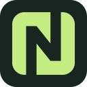
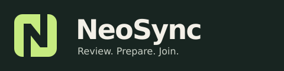

NeoSync identity
Two matching elements interlock to suggest synchronization. Their shared opening reveals an N in the negative space. The symbol works in a single color.
NeoSync
Actual-size launcher icons

Installer banner
